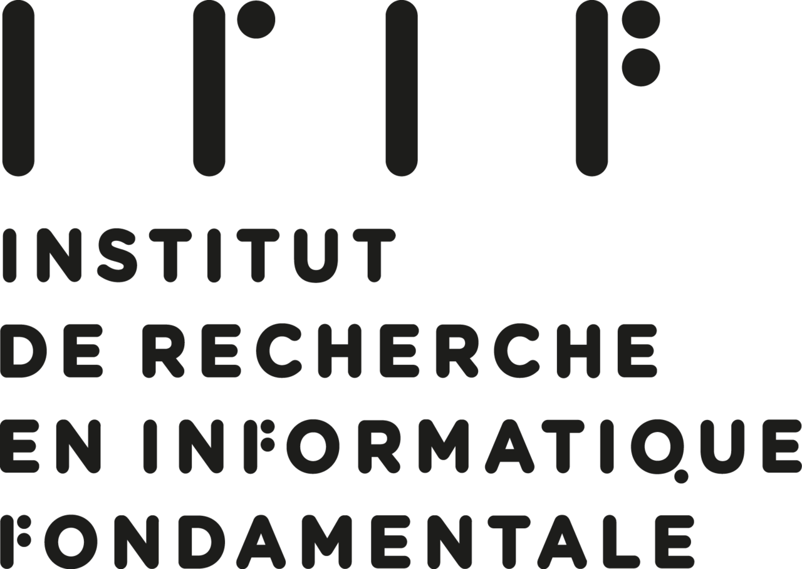
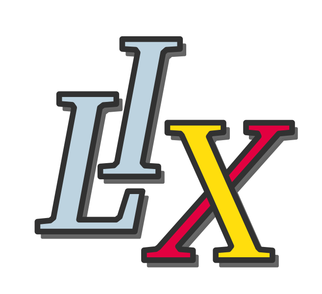
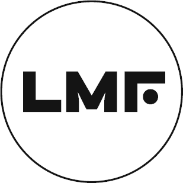

<footer>
<p>&copy; 2024 Paris Automata and Concurrency Theory Seminar (Paris ACTS)</p>
<div class="footer-logos">
    <a href="https://www.irif.fr/" target="_blank">
        
    </a>
    <a href="https://www.lix.polytechnique.fr/" target="_blank">
        
    </a>
    <a href="https://www.lre.epita.fr/" target="_blank">
        
    </a>
    <a href="https://samovar.telecom-sudparis.eu/" target="_blank">
        
    </a>
    <a href="https://www.lacl.fr/" target="_blank">
        
    </a>
    <a href="https://ens-paris-saclay.fr/recherche/laboratoires-et-instituts/laboratoire-methodes-formelles-lmf/" target="_blank">
        
    </a>
</div>
</footer>
